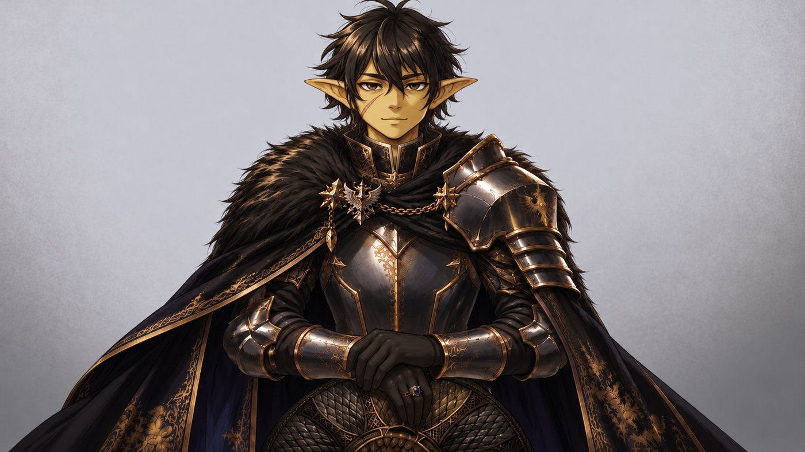
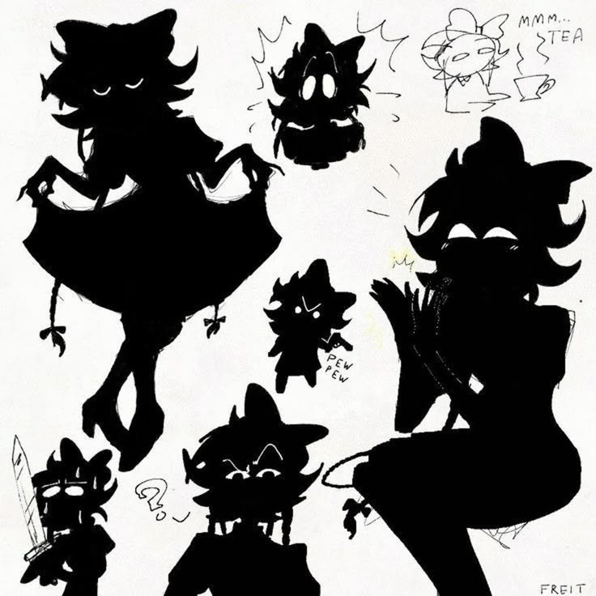
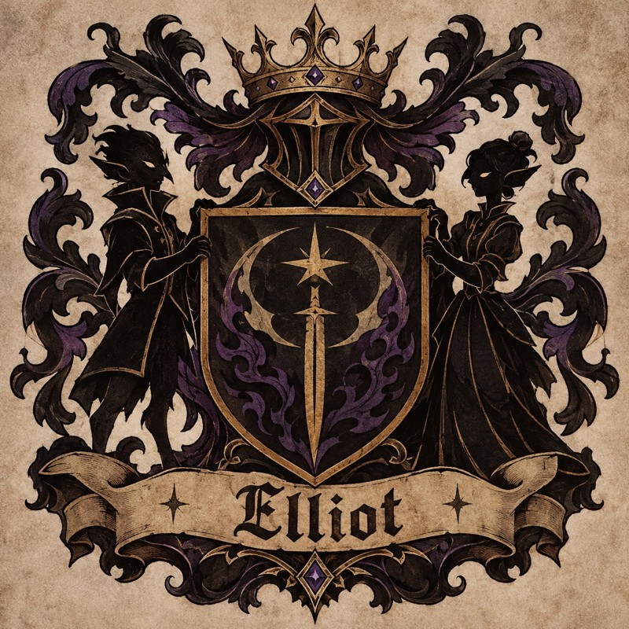
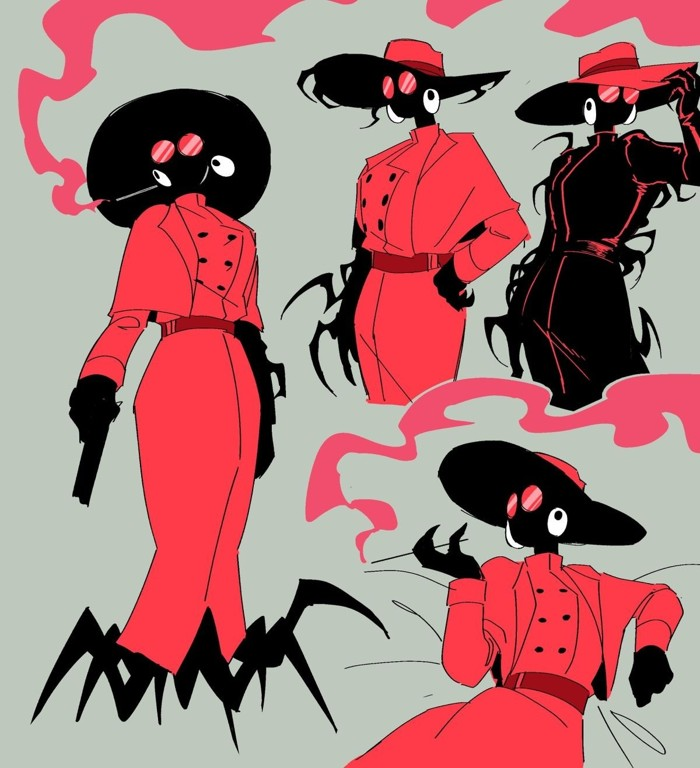
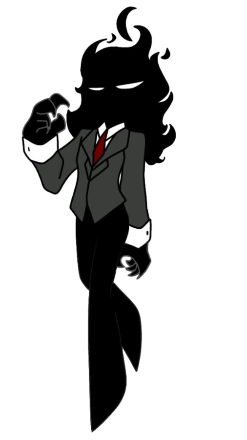
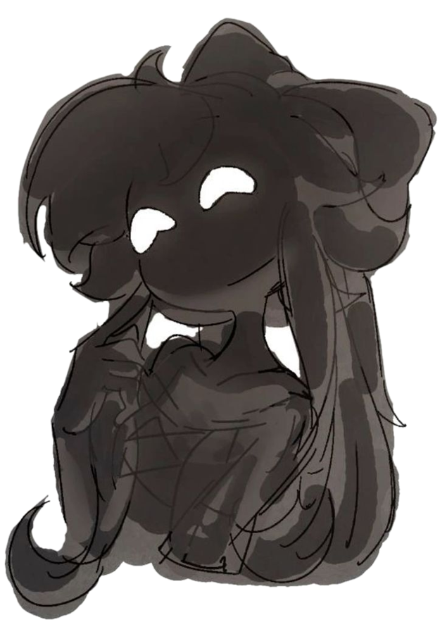

Atlas do Reino
de Noldem
A Origem de Noldem
Os reinos de Arton costumam nascer de linhagens antigas, de conquistas ou da vontade dos deuses. Noldem não nasceu de nenhuma dessas coisas. Seu nome não pertencia a uma família ancestral, nem a uma terra que já existia nos mapas. Antes de ser um reino, Noldem foi apenas um nome, dado a um garoto que não tinha nenhum.
✦Um nome recebido
Foi um cavaleiro da Casa Elliot quem deu esse nome a Rey, o rapaz que a casa havia tirado das ruas. A partir daquele dia, ele passou a ser chamado de Sir Rey d'Noldem. Era um sobrenome, um título e uma identidade, coisas que aquele jovem nunca tinha tido antes.
Na época, ninguém imaginava que o nome iria muito além de quem o carregava. Com o tempo, porém, Noldem deixou de ser só a forma como Rey era chamado e passou a ser o nome de um sonho.
Poucos reinos podem dizer que seu nome foi um presente. Noldem pode. Talvez por isso seus fundadores acreditem que o reino também deve ser um presente: um lugar dado a quem nunca teve um.
✦O que Noldem significa
Para quem vive sob sua bandeira, Noldem é a promessa de que a origem de alguém não decide o seu valor. O reino foi pensado para acolher pessoas que o resto de Arton costuma deixar de lado, e para dar a elas a chance de começar de novo.
Essa ideia vem diretamente da vida de seu fundador. Rey sabe como é ser desprezado, não ter lugar e depender da bondade dos outros. Noldem é a sua resposta a tudo isso.
“Noldem não é um reino construído para pertencer a uma linhagem.
É um reino construído para pertencer às pessoas.”
✦Os pilares do reino
| Pilar | O que representa |
|---|---|
| Acolhimento | Todos podem encontrar um lar em Noldem |
| Igualdade de origem | Ninguém é inferior por onde nasceu ou pelo que é |
| Recomeço | Oportunidade para quem não teria lugar no mundo |
| Liderança do povo | A cada dez anos, os cidadãos escolhem seu regente |
✦A Lei dos Dez Anos
A lei de Noldem é clara: a cada dez anos, o povo tem o direito de escolher um novo regente. Nenhum governante é dono do trono, e nenhuma família o herda por nascimento.
E ainda assim, desde a fundação, o trono nunca mudou de mãos. A lei existe, a escolha acontece, e o povo nunca quis trocar Rey. O garoto que um dia não tinha lugar no mundo é, por vontade dos próprios cidadãos, quem continua a guiá-los.
Em outros reinos, um rei governa porque nasceu para isso. Em Noldem, Rey governa porque, a cada dez anos, o povo decide de novo que é ele quem deve governar.
- O nome “Noldem” tem algum significado (em alguma língua de Arton, ou uma palavra inventada pelo cavaleiro)?
- Qual é o nome do cavaleiro da Casa Elliot que batizou o Rey?
Rey d'Noldem
Rey não nasceu nobre. Não nasceu destinado a comandar exércitos, possuir terras ou ser lembrado pela história. Antes de ser Sir Rey d'Noldem, antes de sonhar com um reino, ele era apenas um garoto tentando sobreviver nas ruas. E talvez seja justamente por isso que sua história importa tanto.

- Raça
- Hobgoblin
- Pele
- Amarela, a mesma cor que ele representa nas cores de Noldem
- Orelhas
- Longas e pontudas
- Cabelo
- Negro, curto e sempre desalinhado
- Olhos
- Castanhos, com um olhar calmo
- Marca
- Uma cicatriz atravessando a bochecha esquerda
- Traje
- Armadura negra com filigranas douradas e um manto escuro de pele, preso por uma corrente com broche de asas
É curioso notar que Rey veste o preto, a cor de Tessa, sobre o amarelo de sua própria pele.
I.Um garoto sem lugar no mundo
Rey passou a infância nas ruas, vivendo como mendigo. Sem família, sem riqueza e sem futuro, aprendeu cedo que o mundo não é gentil com quem não tem nada, e menos gentil ainda com um hobgoblin que não tem nada. Sofria com o desprezo de quem o via como inferior, e aprendeu a engolir muita coisa para continuar sobrevivendo.
Ele não tinha título, não tinha influência, e não tinha ninguém que garantisse que estaria seguro no dia seguinte. Até que seu destino mudou.
II.A Casa Elliot
Rey foi encontrado na sarjeta por Louisa Elliot, que o acolheu como criado na Casa Elliot, uma família nobre de duendes que lhe deu um lugar para viver. Mas ele não foi adotado como filho: foi colocado a serviço da jovem mestra da casa, Tessa Elliot, e ficou conhecido como seu servo número um.
Para quem antes não tinha nem um teto, aquilo significava muito: uma cama, comida, roupas, segurança e um lugar para onde voltar. A hierarquia, porém, era clara. Tessa era a nobre, e Rey era o servo. Mesmo assim, foi nessa relação que ele encontrou algo que talvez nunca tivesse tido: alguém em torno de quem seu mundo passou a girar.
III.Um sentimento guardado
Tessa não era apenas sua senhora. Rey se apaixonou por ela, em segredo. Ela era alguém que ele admirava, a quem servia, e que ocupava um espaço enorme em seu coração.
Mas Rey era Rey: um garoto das ruas, um servo, sem nome de família, riqueza ou prestígio. Aos próprios olhos, dificilmente poderia imaginar estar ao lado de uma nobre. Nunca disse o que sentia, mas esse sentimento passou a fazer parte de quem ele era.
Talvez ele não soubesse como ser amado.
Mas sabia como permanecer ao lado dela.
IV.O início da aventura
Tudo começou a mudar quando Tessa convenceu os pais a investir no treinamento de Rey, para que ele pudesse acompanhá-la numa jornada pelo mundo. E Rey foi junto. Não porque fosse um grande aventureiro, nem um guerreiro experiente, e muito menos porque estivesse pronto para os perigos de Arton. Ele foi porque Tessa foi.
Era o começo de uma jornada que o levaria a lutar, conhecer pessoas, participar de guerras e, aos poucos, descobrir que talvez fosse capaz de muito mais do que acreditava. Rey começou a aventura como servo. Mas o mundo não continuaria o mesmo.
V.A Guerra de Karst
Rey e seus companheiros lutaram na Guerra de Karst e saíram da campanha com louvor. A guerra mudou a escala de sua vida: o garoto que antes só pensava em sobreviver agora fazia parte de conflitos muito maiores do que ele. Aprendeu o peso de lutar ao lado de outras pessoas, de confiar nos companheiros e de enfrentar perigos dos quais não dava para simplesmente fugir.
Depois de suas conquistas, o grupo seguiu para Valkaria, a capital do Reinado, em busca de uma audiência com a Rainha-Imperatriz Shivara. Queriam pedir a ajuda da rainha contra a invasão daqueles que hoje são conhecidos como os Puristas. O antigo mendigo, que um dia não era recebido nem na porta das casas, agora atravessava a maior cidade de Arton querendo falar com a governante do Reinado.
VI.O servo que começou a se tornar cavaleiro
Conseguir uma audiência com a Rainha-Imperatriz não era simples, e a espera poderia ser longa demais. O grupo encontrou um atalho: vencer num torneio em Valkaria abriria as portas mais depressa. Foi ali que aconteceu uma das cenas que melhor representam Rey, numa arena, contra um velho cavaleiro montado. O adversário tinha espada e cavalo. Rey, a pé, segurava uma lança de madeira. Ele se preparou para atacar assim que o cavaleiro avançasse, e os dois investiram um contra o outro.
Ambos erraram, e a lança de Rey se partiu. Não foi uma vitória gloriosa nem um golpe perfeito. Foi um garoto que, mesmo sem saber direito o que estava fazendo, teve coragem de enfrentar um cavaleiro. Foi ali que Rey conquistou Duelo, o primeiro passo simbólico da sua transformação.
O confronto no torneio marca o momento em que Rey obteve o poder Duelo. Ainda não era o cavaleiro que imaginava ser, mas estava começando a se tornar um.
VII.Sir Rey d'Noldem
Depois do torneio, um cavaleiro da Casa Elliot lhe deu o título, mas isso não transformou Rey em outra pessoa. Ele continuava inexperiente, ainda aprendendo o que significava proteger alguém, liderar e carregar responsabilidades.
O título não fez de Rey um cavaleiro.
Ele precisaria merecê-lo.
Com o nome veio também uma posição: Rey se tornou um nobre menor. E a nobreza, ele logo descobriu, não é feita só de títulos e brasões, mas também de pilhas de papel.
Enquanto seus companheiros seguiam para a audiência com a Rainha-Imperatriz, Rey ficou para trás, preenchendo a papelada para retomar Karst. O garoto que um dia não tinha nada agora reivindicava terras, e o que foi dito diante de Shivara ele não chegou a ouvir.
Há heróis que mudam o mundo com a espada. Rey, naquela semana, tentava mudá-lo com pena, tinta e muita paciência com os escribas do Reinado.
VIII.O sonho de Noldem
Talvez o maior sonho de Rey não seja se tornar rei, e sim criar um lugar onde ninguém precise passar pelo que ele passou: um reino onde a origem não determine o destino, e onde goblins, hobgoblins, duendes, humanos, lefou e todos que não encontram espaço no resto de Arton possam viver sem ser tratados como inferiores.
Rey não quer construir um castelo para si. Quer construir um lar para quem nunca teve um. É aí que o garoto das ruas começa a se tornar algo maior do que um servo, um cavaleiro ou um nobre: o fundador de Noldem.
Ele conseguiu. Noldem nasceu, e com ela a Lei dos Dez Anos, que dá ao povo o direito de escolher um novo regente. Mas, a cada escolha, o povo devolve a coroa ao mesmo homem: Rey nunca foi trocado.
IX.Quem é Rey, afinal?
| O que ele foi | O que está se tornando |
|---|---|
| Um mendigo | Um fundador |
| Um garoto sem lar | Alguém que quer criar um lar para todos |
| Um servo | Um líder |
| Alguém sem nome | Sir Rey d'Noldem |
| Um garoto que precisava de proteção | Um cavaleiro que pode proteger outros |
| Alguém sem poder | Alguém que sonha em mudar muitas vidas |
Mas ele nunca deixa de ser o garoto das ruas. Essa parte dele não desaparece com um título, e é justamente ela que o faz querer criar Noldem. No fundo, talvez ainda tenha medo de perder tudo o que conquistou.
Rey é um garoto que recebeu um lugar no mundo e decidiu que, um dia, daria um lugar a todos que não possuem um.
- Classe do Rey na ficha, idade e arma preferida.
- Quem era o velho cavaleiro do torneio?
- Retomar Karst tem ligação com a fundação de Noldem? Noldem fica em Karst?
Tessa Elliot
Nenhuma crônica de Noldem estaria completa sem Tessa Elliot. Foi sob o teto de sua casa que Rey deixou de viver nas ruas, e foi a decisão dela de partir pelo mundo que colocou o futuro fundador do reino no caminho da aventura.

Tessa é uma duende, um dos seres feéricos de Arton. Nos esboços, aparece sempre inteiramente em negro, como uma sombra, e só os olhos brancos se destacam. E não é estilo de desenho: os Elliot são conhecidos em Pondsmânia como os Juízes das Sombras, justamente por essa aparência de silhueta. Não por acaso, o preto é a cor que a representa em Noldem.
- Raça
- Duende
- Idade
- 18 anos
- Silhueta
- Cabelo volumoso com orelhas ou laço no alto, tranças longas presas com laços
- Traje
- Vestido de saia rodada, botas e luvas
- Armas
- Uma espada, e há esboços dela fazendo “pew pew”
- Detalhe
- Uma xícara de chá, que ela parece apreciar bastante
✦O que os registros já contam
Tessa nasceu nobre, como herdeira da Casa Elliot, e cresceu como a jovem mestra da casa. Diferente de Rey, nunca precisou conquistar um nome: o dela já era respeitado desde o berço. Quando a casa acolheu Rey, foi a ela que ele passou a servir, como seu servo número um. Mais tarde, Tessa pediu aos pais que investissem no treinamento de Rey, para transformá-lo no cavaleiro que a levaria além das paredes da mansão, e os dois partiram juntos por Arton.
Ela está no centro da história de Noldem e é apontada como sua futura rainha.
✦Uma nobre de verdade
No fundo, Tessa é uma pessoa boa. Mas é também uma nobre criada como nobre, e carrega os preconceitos da sua classe: não gosta de pessoas pobres. Para ela, a pobreza tem algo de incômodo, quase de ofensivo.
A ironia não passa despercebida aos cronistas. A jovem que torce o nariz para os pobres tem, como servo mais leal, um hobgoblin que já foi mendigo, e está destinada a reinar sobre um reino criado justamente para acolher quem não tem nada.
✦Os tabus da duende
Como todo duende de Arton, Tessa carrega tabus, marcas de sua natureza feérica das quais não consegue escapar. São dois, e nenhum deles ajuda sua fama.
O primeiro: ela nunca pode aceitar um elogio ou presente de um plebeu sem retribuir com um insulto cortante ou um pequeno ato de humilhação, como derrubar a bandeja de um garçom. O segundo: sempre que vê um aliado errar justamente naquilo em que é especialista, precisa debochar do erro em alto e bom tom, não importa a situação.
- A Punição dos Plebeus: ao receber elogio ou presente de um plebeu, deve retribuir com um insulto ou uma pequena humilhação.
- A Perfeição Masoquista e a Falha Alheia: quando um aliado erra na própria especialidade, deve debochar em alto e bom tom.
✦O que Tessa não sabe
Rey nunca contou o que sente, e Tessa não sabe. Para ela, ele continua sendo seu servo número um, o mais leal de todos. Ela não imagina que o garoto que caminha ao seu lado por Arton faz isso por amor a ela.
Mas Tessa também guarda um segredo: em seus planos pessoais, Rey seria o aventureiro que levaria o nome dos Elliot à glória. Algo que ela nunca disse em voz alta.
✦A futura rainha
Em Noldem, a coroa não passa de pai para filho, e o regente é quem o povo escolhe. Tessa, portanto, não será rainha por herança nem por eleição. Ela será rainha ao se casar com Rey.
Como esse dia vai chegar, nem os cronistas sabem dizer. Ainda falta Rey encontrar coragem para dizer o que guarda há tanto tempo, e falta Tessa descobrir o que sente pelo servo que sempre esteve ao seu lado. Esta página da história de Noldem ainda está sendo escrita.
A nobre que nasceu com um nome
vai se casar com o garoto que recebeu um.
| O que os outros veem | O que há por baixo |
|---|---|
| Uma nobre que despreza os pobres | Uma pessoa boa, presa à forma como foi criada |
| Alguém que humilha quem lhe dá presentes | Uma natureza feérica que ela não escolheu |
| A senhora de um servo | A futura rainha de um reino de acolhimento |
- Qual a classe dela?
- O que ela sente pelo Rey?
- Quando você souber: como o Rey e a Tessa chegam ao casamento
A Casa Elliot

A Família Elliot ascendeu à nobreza muito recentemente, pelo menos no Reinado. Em Pondsmânia, porém, eram grandes e respeitados: uma linhagem de duendes que se dedicava a manter as coisas em ordem no reino mais caótico de Arton.
✦Os Juízes das Sombras
Por sua aparência de silhueta, os Elliot são conhecidos em sua terra natal como os Juízes das Sombras, e praticamente qualquer duende que veio do reino feérico já ouviu falar deles. Alguns de seus membros mais notórios deixaram a casa natal para servir em ordens de cavalaria, principalmente em Bielefeld e Valkaria.
Ainda assim, o nome Elliot nunca se destacou nos livros de história, seja pela aparência macabra da família, seja por serem duendes. James e Louisa Elliot, porém, tinham outros planos.
✦De Pondsmânia a Bielefeld
O casal saiu de Pondsmânia e se mudou para Bielefeld, usando a influência que tinha na terra natal para estabelecer uma pequena presença na corte local. James tinha muito talento com as palavras, mas acabava mais intimidando as pessoas do que atraindo bons olhares para a família. Louisa, por sua vez, era ótima de conversa, mas tinha pouca paciência para os jogos da corte e costumava se ausentar antes de os encontros acabarem, deixando o marido sozinho, como uma figura assustadora.
As duas filhas pareciam muito determinadas a ajudar os pais na árdua tarefa de colocar o nome da família em foco, mas cada uma tinha uma ideia completamente diferente de como fazer isso.
✦Duas filhas, dois caminhos
Clarissa, a mais velha, decidiu conquistar a fama por conta própria. Usando a afinidade com a magia que sua raça possui, resolveu se tornar uma arcanista de batalha. Estudou em casa com um tutor até ter idade para ir à Academia Arcana, onde planejava fazer contatos e se estabelecer como uma grande arcanista. Conseguiu: tornou-se muito respeitada dentro da Academia. Mas isso não ajudou a reputação da família. Era vista como uma ótima arma contra grandes problemas, e nada além disso. Sentiu na pele o que seus parentes cavaleiros sentiam.
Tessa tinha outros planos. Cresceu lendo livros e ouvindo histórias sobre aventureiros e os feitos que mudaram a história de Arton. Não era muito querida nos círculos da nobreza por causa de seus tabus, então evitava multidões e ficava na mansão, sempre acompanhada de Rey. Ele era a plateia de seus planos mirabolantes para conduzir um grupo de aventureiros à glória suprema.
Para isso, ela pediu aos pais que investissem no treinamento de Rey, porque tanto ela quanto eles só confiavam nele para acompanhá-la em sua suposta jornada. James e Louisa não imaginavam que aquilo fosse sair do papel, mas o pedido de uma jovem nobre mudou o destino da família para sempre.
| Membro | Idade | Quem é |
|---|---|---|
| James Elliot | 56 anos | O patriarca de aparência intimidadora |
| Louisa Elliot | 52 anos | A matriarca encantadora que odeia a corte |
| Clarissa Elliot | 25 anos | A arcanista que renegou a herança |
| Tessa Elliot | 18 anos | A herdeira que sonha com aventuras |
I.James Elliot
Um nobre de postura naturalmente intimidadora, mas extremamente diplomático. Odeia conflitos diretos e prefere ficar calado quando acha que não tem nada de positivo a dizer. Só os mais próximos sabem como ele realmente é, porque sua aparência e seus olhos marcantes afastam as pessoas.
É muito amoroso com as filhas e a esposa, e mima quem gosta sempre que tem oportunidade. Embora tenha muita dificuldade de demonstrar, com os anos passou a ter muito apreço por Rey. Viu muito potencial no jovem cavaleiro que acompanhava sua filha, e por isso deixou os dois partirem juntos, confiante de que ele a protegeria com a própria vida.
- Mãos Ocultas: nunca pode mostrar as palmas das mãos em público. Mantém as mãos sempre atrás das costas ou dentro de luvas, porque acredita que, se alguém vir as linhas de suas mãos, descobrirá seus segredos sentimentais.
- O Sorriso Proibido: só pode sorrir quando está completamente sozinho ou no escuro. Na frente dos outros, o rosto fica travado numa expressão severa e ameaçadora, mesmo quando ele está radiante de alegria.
II.Louisa Elliot

Uma nobre extremamente bem articulada, com um charme natural que faz todos gostarem dela à primeira vista. Mesmo assim, não gosta de formalidades e odeia os assuntos da corte. Prefere se isolar na mansão ou andar a cavalo pela propriedade. Ainda assim, está sempre presente quando a família vai a esses eventos, para apoiá-la, mesmo sendo fisicamente incapaz de ficar até o fim.
Não entende por que é tão popular, mesmo se esforçando para manter essas pessoas longe de si e perto do marido, o verdadeiro diplomata da família. Normalmente só tem paciência para as filhas e os criados da casa. Foi ela quem encontrou Rey na sarjeta e o acolheu como criado.
- O Voto da Verdade Fútil: sempre que um aristocrata lhe faz uma pergunta sobre política, fofocas da corte ou negócios, ela é forçada a responder com uma curiosidade completamente inútil e detalhada sobre a anatomia ou os hábitos intestinais de seus cavalos.
- A Hora da Cinderela Aristocrática: em qualquer evento social, assim que o anfitrião dá o primeiro gole na bebida, Louisa precisa anunciar em voz alta: “Infelizmente, minha carruagem vai virar uma abóbora em cinco minutos”, e sair andando de costas até a saída mais próxima.
III.Clarissa Elliot

Uma arcanista talentosa desde cedo, que usou seu sangue feérico para se tornar uma grande feiticeira. Nunca gostou das cortes nem de estar perto da nobreza. Por isso, mesmo sendo a filha mais velha, renegou sua herança em favor da irmã mais nova, Tessa.
Isso não a fez desistir de espalhar o nome da família por Arton. Só a tornou mais independente do título do que os nobres gostariam, e as cortes, obviamente, não viam isso com bons olhos. De personalidade forte, ela se divertia provocando Rey, fazendo pedidos difíceis ou colocando a irmã em supostas situações de perigo só para vê-lo salvá-la. Hoje vive como andarilha, resolvendo problemas por Arton em nome da Academia Arcana.
- O Contrato do Pedido Absurdo: nunca pode aceitar um pedido de ajuda simples ou direto. Sempre exige que a pessoa lhe traga primeiro um item completamente inútil, como “a sombra de um gato branco” ou “três gotas de suor de um cavaleiro assustado”.
- Proibição de Títulos: jamais pode chamar um nobre pelo título, como “Conde”, “Barão” ou “Vossa Alteza”. Se alguém insistir, Clarissa precisa inventar na hora um nome ridículo de criatura mágica para a pessoa e só se dirigir a ela assim.
IV.Tessa Elliot

Uma jovem nobre cheia de ideais, que cresceu ouvindo histórias sobre heróis e sempre admirou os aventureiros como forças capazes de mudar o rumo de reinos inteiros. Nunca se deu bem com as outras crianças da nobreza, por ser duende, nem com as crianças mais pobres, por causa de seus tabus. Ficou muito sozinha, e foi isso que levou a mãe a designar um servo pessoal para ela. Houve vários testes até que Rey ocupasse essa posição.
Tessa gostava de como o jovem era obediente e parecia muito leal, sempre resistindo às provocações de Clarissa. Pegou muito apreço por ele e fez um acordo com os pais para transformá-lo num cavaleiro de armadura brilhante, capaz de levá-la além das paredes da mansão. Quando surgiu a chance de sair de casa, sabia que podia contar com Rey para protegê-la.
O que ela nunca contou a ele é que, em seus planos pessoais, Rey seria o aventureiro que levaria o nome da família à glória. Algo que ela, claramente, nunca disse em voz alta.
- A Punição dos Plebeus: nunca pode aceitar um elogio ou presente de um plebeu sem retribuir com um insulto cortante ou um pequeno ato de humilhação, como derrubar a bandeja de um garçom.
- A Perfeição Masoquista e a Falha Alheia: sempre que vê um aliado ou companheiro de jornada errar na própria área de especialidade (um inimigo resistir à magia de um mago, um guerreiro errar um ataque), ela precisa debochar do erro em alto e bom tom e se fazer ouvir, não importa a situação.
De Pondsmânia ao Reinado, os Juízes das Sombras
sempre buscaram um lugar na história.
Foi um garoto das ruas quem o encontrou para eles.
Os Símbolos de Noldem
Todo reino de Arton se reconhece por suas cores. As de Noldem não foram escolhidas por tradição nem herdadas de uma dinastia: cada uma delas representa uma parte da história que deu origem ao reino.
✦As três cores
A cor da jovem mestra da Casa Elliot, sob cujo teto Rey encontrou abrigo e por quem a jornada começou.
A cor do garoto das ruas que recebeu um nome e decidiu dar um lugar a quem não tem um.
O branco não tem uma cor definida, porque o povo de Noldem pode ser da cor que quiser. É o espaço livre de cada cidadão para escrever a própria história.
Diz-se em Noldem que o branco é a cor mais importante das três: Tessa e Rey abriram o caminho, mas é o povo que dá ao reino todas as cores que ele ainda vai ter.
✦O Brasão: a Coroa dos Dez
O brasão de Noldem não mostra animais ferozes, armas nem as cores de uma família antiga. Mostra uma coroa branca, a cor do povo, porque em Noldem a coroa pertence a quem a concede, e não a quem a usa.
- Campo
- Negro, a cor de Tessa
- Coroa
- Branca, a cor do povo, que é quem decide quem a usa
- Dez pontos
- Amarelos, a cor de Rey, um para cada ano até a próxima escolha
- Bordadura
- Amarela, protegendo o escudo
Os dez pontos formam um círculo que nunca se fecha num único dono: completado o décimo, a escolha volta ao povo. Até hoje, a coroa sempre voltou para as mãos de Rey.
✦O Lema
O lema resume em poucas palavras o que Noldem promete a quem cruza suas fronteiras. Também conta, sem dizer o nome, a história de seu fundador: um garoto que não tinha lugar no mundo, recebeu um, e decidiu dar o mesmo a todos os outros.
- Bandeira (pode usar o brasão ou só as três cores)
- Juramento dos cavaleiros de Noldem